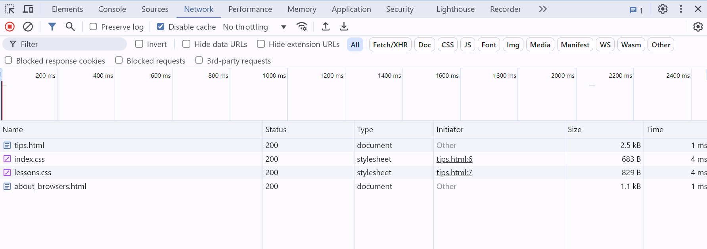

About Browsers
The simplest explanation of browsers are that they are applications that allows users to interact with data based on said data and embedded instructions that explain how various UI elements are supposed to work within the context of that data. A more complex description of browsers are that in general a browser consists of the following parts:
- User Interface
- Browser Engine
- Data Persistence
- Rendering Engine
- Networking Component(s)
- JavaScript Interpreter
- UI Backend
Taken in total, a browser is an application that allows more or less complicated interaction with requested data based on the structure of that data. Here is an article that goes into slightly more depth on the components of a browser
You can see what is happening behind the scenes in a browser when it has a document opened by pressing <Ctrl+Shift+i> (give it a try now). This is the developer tool window. There is a wealth of information available here for you to use. Using the Chrome browser as a reference, you shoud see something like this:

Here's a rundown on some of the tabs:
- Elements - Shows you an HTML interpretation of the page side by side with the rendered page so you can locate the rendered element by hovering over the HTML
- Console - Displays important data output by some part of the browser (i.e. error messages) or output created by the page author (via a console.log, console.error, or some other mechanism)
- Sources - You can view the HTML and JavaScript of a page here and put breakpoints in the JavaScript to assist with debugging your code.
- Network - You can see all of the network calls into and out of your browser along with all relevant data, headers, etc that are being made in real time alongside the rendered data.
There are other tabs but the ones I've listed are the ones you will use most often.
To get some idea of what a browser is doing try this: Enter a the location of a directory and not a file into the address bar. Browse around your filesystem. Click on different file types and see how (or if) your browser displays it.